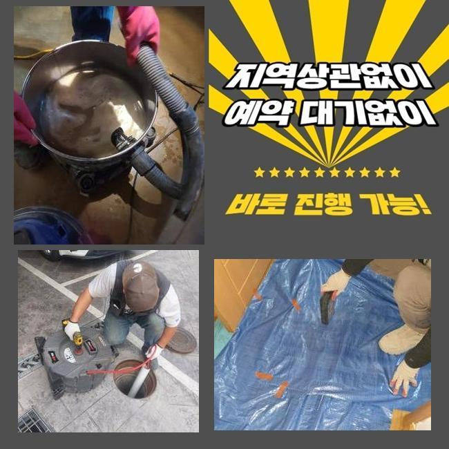
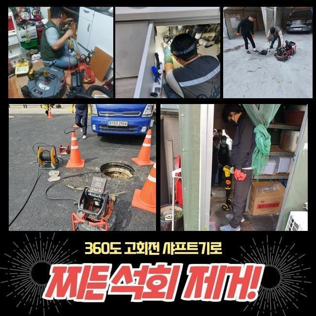
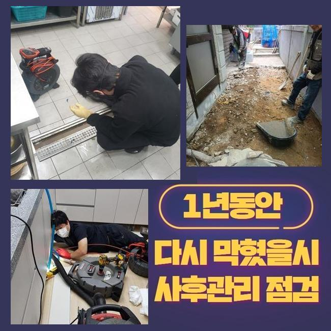
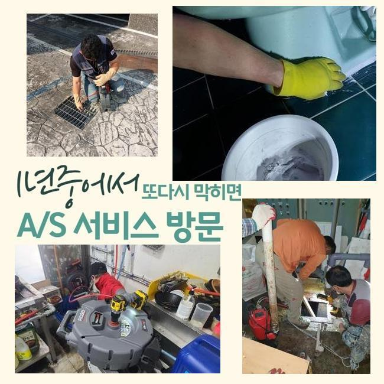
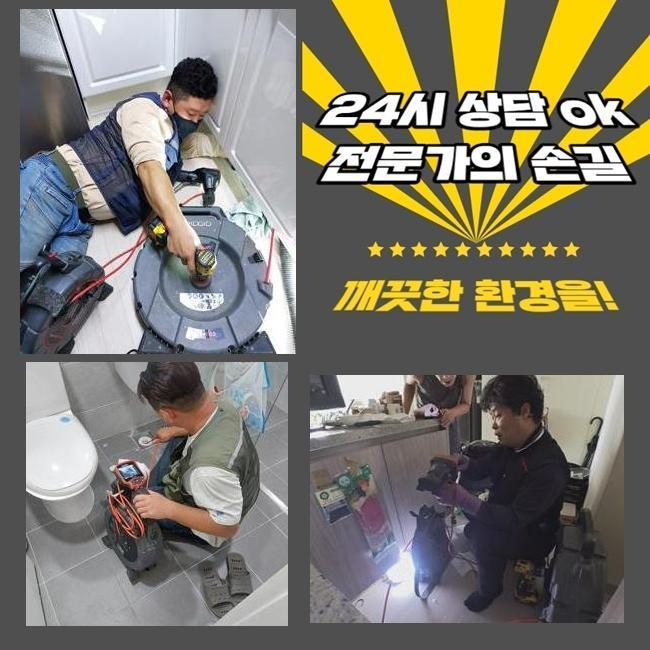
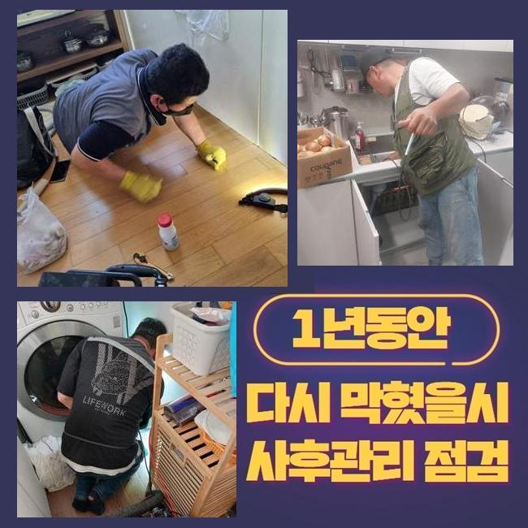
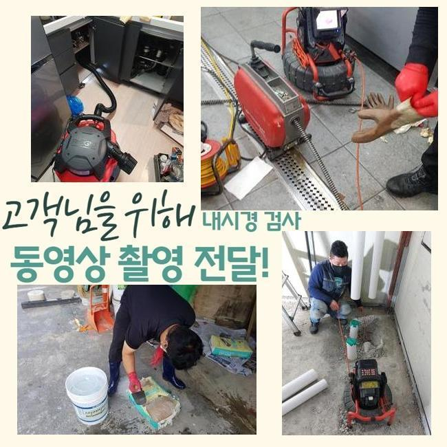

🏠 남촌동변기막힘 원동 냄새차단 배관막힘누수업체
용인 원동 변기막힘 전문 시공 후기

📋 작업 개요
- 위치: 용인 원동, 원동, 용인
- 서비스 유형: 변기막힘, 하수구막힘, 배관막힘, 누수수리, 배관청소, 고압세척, 악취차단
- 작업 일시: 2025. 2. 27. 13:03
- 업체명: 하수구수사대 (010-5615-2118)
🔍 문제 상황
남촌동변기막힘 원동 냄새차단 배관막힘누수업체
저희측은 배수시스템과 연계된 여러가지의 시공을 시행중에 있죠
기술자가 상시대기중에 있으며 의뢰인께서 부닥치신 트러블에 바로바로 응대해드린답니다
금번에는 주방배관막힘 현장을 소개해드리려 합니다
그저께 연락을 주신 지점은 일반상가입니다
주방쪽 배수구가 고장난 상황이었고 거기에 더해 화장실배수까지 온전하게 안된다며 빠르게 방문해달라고 하셨어요
마침 근방에 대기중인 작업자가 즉각적으로 이동했고 알맞은 방책을 수행하기로 하였답니다
주방시설 배관막힘과 화장실쪽의 관로정체가 생긴곳은 닭백숙 식당이었는데요
개수대 부근에서는 많은 음식찌꺼기가 취급되므로 관막힘이 자주 나타납니다
그렇기에 음식점을 하시는 분들은 그에 대처할수 있는 다방면의 조치를 취하실 때가 많은데요
수년간 주의를 기울여서 사용하였다 하더라도 갑작스럽게 단단한 물체가 유입된다면 체증이 일어나기 쉬우므로 주의하셔야 합니다
금일 소개드릴 장소는 무슨 사유로 고장이 생긴건지 밀도있게 체크해보기로 했어요
우선적으로 주방의 배관시설부터 진단해보았는데요
음식점의 배관은 일반가정의 주방시설물과 상이하게 트렌치설비의 크기도 굉장히 큰데요

🔎 원인 분석
💡 전문가 진단: 정밀 진단 장비를 사용하여 슬러지의 고착 여부를 판명하고 타격/세척 작업을 실시했습니다.
그러므로 처리가능한 수도량도 많아질 수밖에 없는데요
그러므로 보통의 가정집의 배수성능 기준으로 이상여부를 정해서는 곤란하고 이에 합당한 하수를 흘려보내 상태를 정밀하게 알아보는 것이 필요한겁니다
해당 과정을 신밀히 안하고 대충 넘어간다면 몇달뒤에 물막힘이 다시 일어날수 있죠
배수기능을 확인하였고 정상적으로 물빠짐이 진행되지 않는걸 간파할수가 있었어요
느릿느릿 빠져버리기는 하였지만 주방사용을 하기엔 힘겨운 상태였어요
그다음 배수관 속으로 배관카메라를 투입하여 분명하게 정황을 확인해보기로 했죠
유분이 포함된 노폐물과 석회성분들이 관로안을 메우고 있었죠
파이프속에 흘러가면 안될것들이 누적되어서 정체가 생긴거랍니다
이러한 것들과 관계된 관로에 혼입되어선 안될 사안을 알려드리겠습니다
설명하는 것들을 기억해주시길 부탁드리며 평상시의 생활에 이를 적용해볼것을 추천합니다
기름기는 배수과정에서 단단하게 뭉치고 그것으로 인하여 하수관에 달라붙을 확률이 커요
그렇기 때문에 반드시 휴지 등으로 제거하고 세정하는게 필요한겁니다
또한 기름을 별도로 처리하는 과정도 습관적으로 활용하는게 좋겠죠
요즘에 즐겨드시는 원두커피에서 발생되는 가루들도 하수도막힘을 일으킬수 있고요
커피가루는 기름과 결합하는 특징이 있기에 배관속에서 뒤엉키기 쉽답니다

🔧 작업 과정
그러므로 일반쓰레기로 분류하여 버리시는게 좋습니다
설거지를 하는도중 잔여물질을 곧장 주방배관에 흘려보내면 관로에 누적될 확률이 있답니다
조미성분은 부피가 작기에 거름망에 안걸리고 배관쪽으로 유입될수 있어 개별적으로 버리는게 좋아요
튀김류를 만드시다가 생겨난 전분가루 등도 주방설비에 직접적으로 투입하면 뭉쳐져서 물막힘이 유발될수 있죠
그렇기에 이러한 것들은 필히 분리하여 배수설비를 깔끔하게 관리해나가실 것을 권장합니다
내시경설비로 심부까지 검사해보았더니 공동관도 막힘이 있을거라고 예상되었으며 별개로 진단하기로 결정합니다
우선 의뢰인의 식당의 관로 정비를 시행해야 하겠습니다
닭백숙요리 전문식당이라 여타 업장들과는 달리 기름기가 상당히 많았으며 그외의 노폐물들과 믹스되어서 이물이 가득찬 상태였죠
이상황이 오래 지속되며 배관과 하나가 돼버린 형국이었습니다
샤프트기기를 써서 본 지점의 1단계 세척공정을 시행하였습니다
부품들은 배관의 특성에 맞게끔 교체하여 시공할때도 있는데 보통은 사슬형태의 체인노커를 쓰곤하죠
케이블의 끝부분에 해당 부속품이 붙어있어서 하수관안에 투입한뒤 가동시키면 빠르게 돌면서 누증된 이물질들을 분쇄하는 시공을 수행하죠
보편적으로 해당 기계를 돌리면 웬만한 이물들은 해결돼요
그렇긴하지만 앞선 진단을 기반으로 이건물은 중앙관로가 이물이 전이되었다는걸 간파한바가 있답니다
그러한 경우엔 개별배수관 처리만으로 근원적인 트러블이 없어지지 않아요
세정된걸로 보일수는 있겠으나 공용하수도가 정체를 이루고 있다면 얼마간의 시간이 흐른뒤에 또다시 관로가 막혀버리게 되겠죠
개별배관 청소를 마친다음 지하공간에 자리잡은 공용관을 진단해 주었답니다
내시경설비를 투입하니 첩첩이 겹친 검정색의 잔재들이 가득하였답니다
긴시간 퇴적을 이룬것으로 생각되었고 면적도 넓다보니 더더욱 오물이 많아진거에요
그걸 고압물세정으로 해결하기로 하였으며 2시간이 넘게 소제를 진행하였어요
공동관까지 스케일링 시공을 하고나서 의뢰인의 식당으로 이동하여 하수관 점검과 화장실의 배수구까지 진단수리를 시행하였더니 전에 꽉 막혔던 부분이 기억도 안나게 속시원히 통수가 되어서 시원하게 빠져나갔답니다
금번 지점은 막대한 유분찌꺼기와 석회물질 덩어리가 막힘을 일으켰던 이유였고 지하주차장의 횡주관로까지 문제가 전이되어있어 정황이 심각했답니다
해당 문제를 분쇄기기와 고압청소 공정을 바탕으로 알맞게 정리하였으며 통수된 결과를 확인할수가 있었답니다
공정을 끝마치고 생활중에 발발가능한 막힘상황들과 숙지해두면 유용한 파이프보존 대책들을 정리해서 안내하였습니다


✅ 작업 완료
그리고 전화로 한번더 물어보셨기에 세세하게 안내드렸답니다
작업을 잘못 진행하면 몇달뒤 배수관에 고질적인 문제들이 발생가능합니다
그렇기에 정확한 시공방식을 적용해서 정비하려는 기본방침이 중요해요
이에 따라 여러 변수를 염두에 두고 수리를 이행해야한다는 걸 말씀드립니다
업장에서 느닷없이 배수관정체가 생겨난다면 영업을 못하는 상황이 될수 있답니다
그렇기 때문에 이글을 읽으시는 분들은 미미하게라도 문제가 포착되었다면 방치하지 마시고 배관수리업체에 전화하시길 부탁드립니다




⚠️ 베란다 누수 및 방수 관리 방법
- ✅ 비가 많이 올 때 창틀 주변이나 아래층 천장에 얼룩이 생기는지 정기적으로 확인해 보세요.
- ✅ 우수관 주변 실리콘 마감이 들뜨거나 깨진 틈새가 있는지 손상 여부를 수시로 체크하세요.
- ✅ 베란다 바닥 타일의 줄눈(메지)이 소실되면 그 틈으로 물이 침투하여 누수가 유발됩니다.
- ✅ 누수 의심 증상 발견 시 방치하면 아래층 손실이 커지므로 즉시 전문가의 진단을 받으십시오.
💡 핵심 정리
- 확실한 장비 작업(내시경 점검 및 샤프트 스케일링)으로 원인을 뿌리 뽑습니다.
- 작업 후 1년 이내에 동일한 부위 재발 시 100% 무상 A/S 서비스를 보장합니다.
- 서울 · 경기 · 인천 전 지역에 24시간 언제든 긴급 출동할 수 있도록 항시 대기 중입니다.
❓ 자주 묻는 질문 (FAQ)
🚨 용인 원동 변기막힘 문제로 고민이신가요?
정확한 원인 진단과 확실한 시공으로 재발 없는 해결을 약속드립니다.
24시간 긴급 출동 | 서울 · 경기 · 인천 전지역 | 1년 내 재발 시 무상 A/S